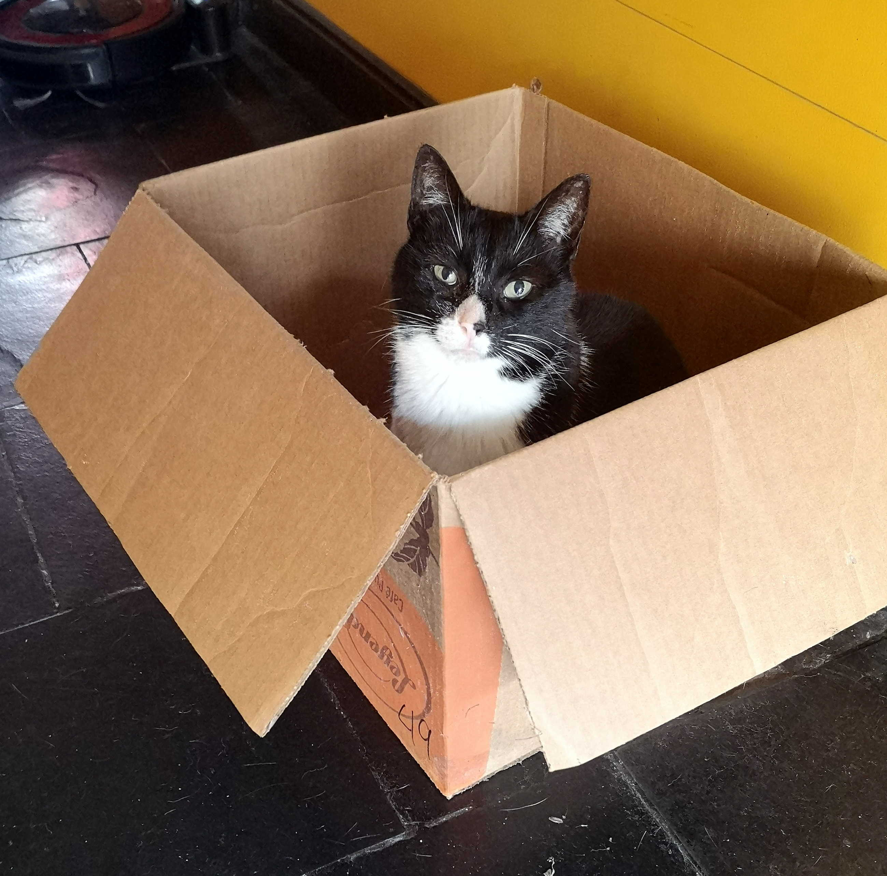

This is not my cat but this is a very cute cat. These pictures are what the internet is for. I love dogs and have a very cute one but I don't think they were the main reason for html2. My dog, socks will eventually get a page dedicated for him.
Sourced from here
Note the links for copyright reasons, not sure if alt text will surfice